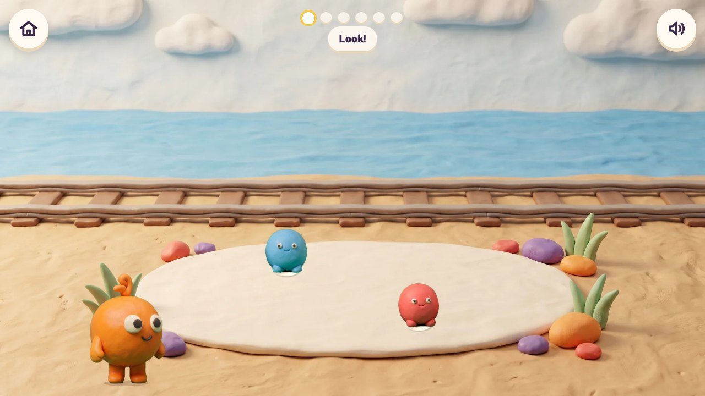
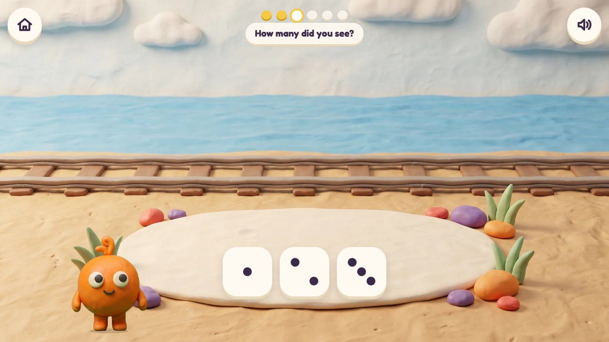
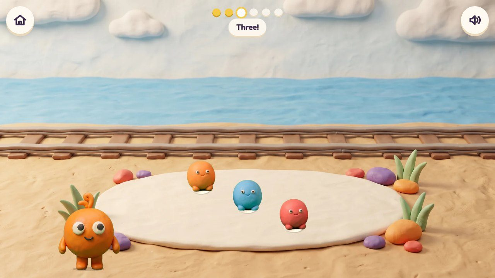
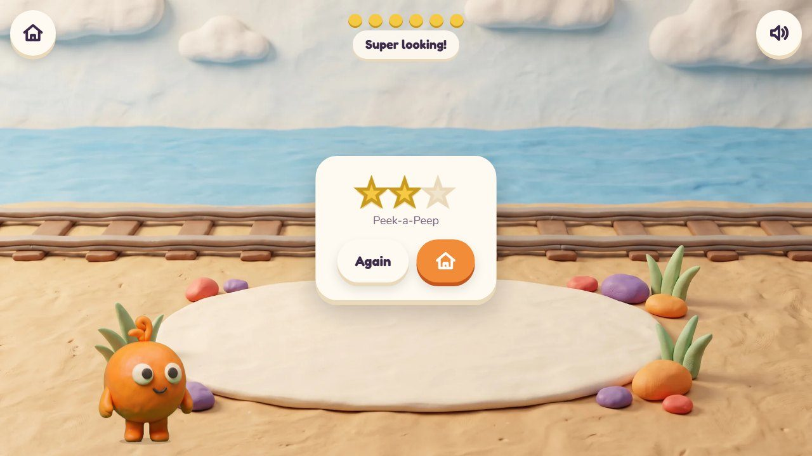
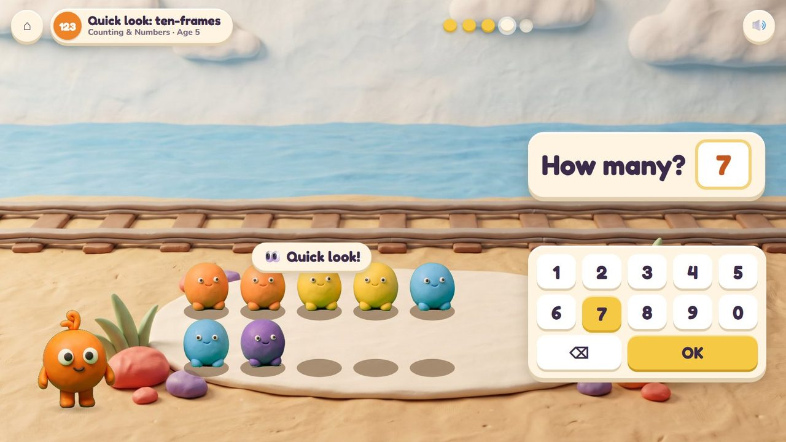
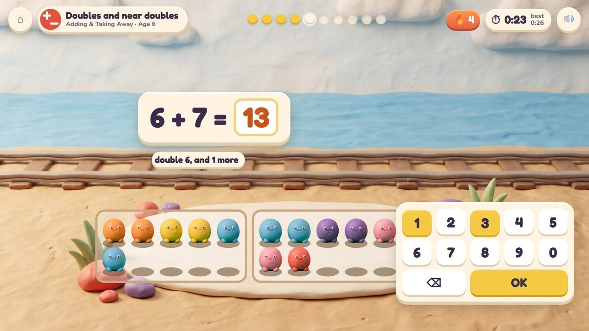
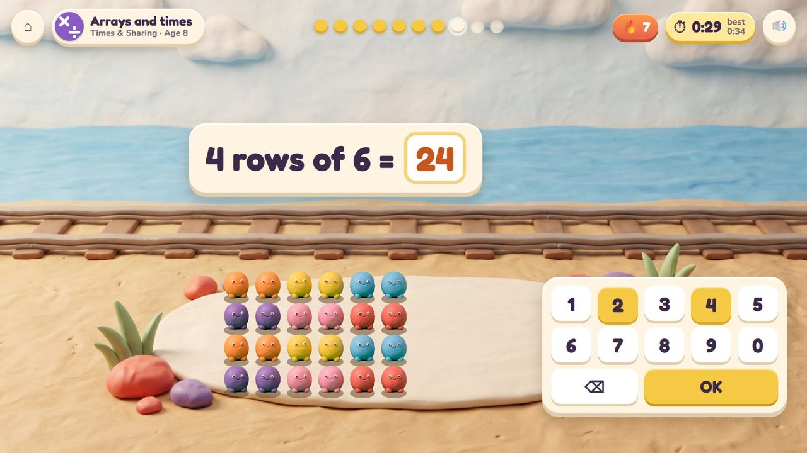
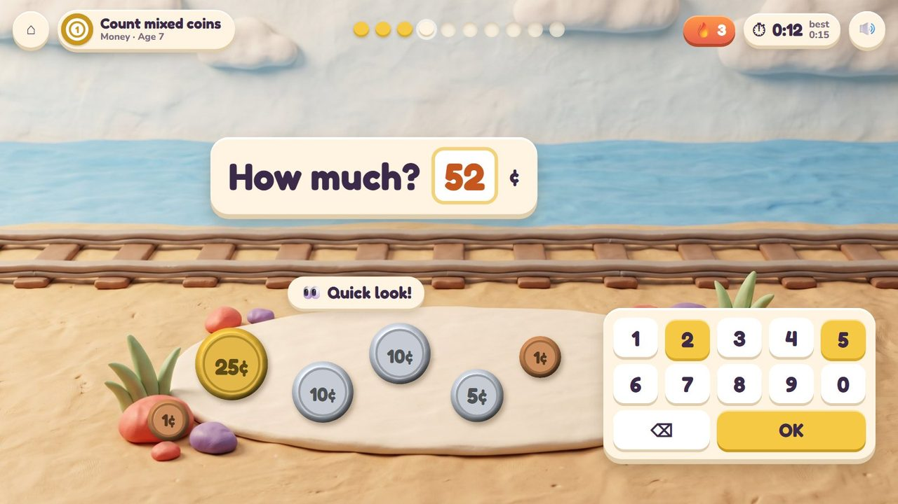

Peeps peep out for a moment: how many did you see?
23 lessons (8 taught here first, the rest practised here) in 5 topics:
Counting & NumbersAdding & Taking AwayTimes & SharingPlace ValueMoney

A quick look. Peeps peep out of holes in the clay mat for about a second, in a pattern (dice, a ten-frame, two frames, rows), then hide. The child says how many without counting one by one. Seeing amounts at a glance is what makes adding quick later, so this is also a warm-up.
Look, then tap a dot button (ages 3-4) or the number pad.
All the Peeps pop out together and wave.
These frames are the real app today; the frames further down show the same game in other lessons and ages.
Two Peeps peep out of the mat for a moment.
🔊 “Look!”

They hide; the answers are dot patterns.
🔊 “How many did you see?”

The Peeps come back out to check.
🔊 “Three!”

Stars for first tries.
🔊 “Super looking!”
Peek-a-Peep is quick by nature: one look, one answer. From 6 the round is timed against your best.
The badge at the top left says the topic, the lesson and the age.

Seven Peeps in a ten-frame for a second: five and two.

Two ten-frames: 6 and 7. Double 6 and one more: 13. Timed.

Four rows of six, for a second: 24.

Coins lie on the mat for a moment: 52 cents.
| Age 3Pre-school | One to three, then up to five, in dice patterns; answer with dot buttons. |
| Age 4Pre-K | Dice and finger patterns up to 6; five and some more. |
| Age 5Kindergarten | Ten-frames: 7 is five and two. Numbers to 20. |
| Age 6Grade 1 | Two frames at once: doubles and near doubles (6 + 7). |
| Age 7Grade 2 | Coins for a moment: how much? Rows and columns. |
| Age 8Grade 3 | Arrays: 4 rows of 6. |
| Age 9Grade 4 | The warm-up's quick look for times facts. |
| Age 10Grade 5 | The warm-up's quick look for times facts. |
1 to 5 at 3, up to 10, then two frames, then rows of up to 10
dice, fingers, ten-frames, two frames, arrays, coins
longer for little ones, shorter as they grow
dot buttons at 3-4, the number pad from 5
Age by age they are on the full list; here grouped by topic (the first activity named teaches a lesson, the others practise it).
early yearsPoke Pals · Peek-a-Peepearly yearsPeek-a-Peepearly yearsPoke Pals · Peek-a-Peepearly yearsPeek-a-Peep · Poke Palsearly yearsPoke Pals · Peek-a-Peepearly yearsPoke Pals · Peek-a-Peepearly yearsPeek-a-Peepearly yearsPeek-a-Peep · Poke Palsearly yearsPoke Pals · Peek-a-Peepearly yearsSeesaw Twins · Peek-a-PeepK.CC.3Peek-a-Peep · Scale CoatK.CC.3Peek-a-Peep · Number LiftK.CC.5Poke Pals · Peek-a-PeepK.CC.4Peek-a-Peep1.NBT.1Number Lift · Peek-a-Peepearly yearsPeek-a-Peep · Poke PalsK.OA.5Scale Coat · Peek-a-Peep1.OA.6Scale Coat · Critter Maker · Peek-a-Peep1.OA.6Poke Pals · Peek-a-Peep2.OA.4Garden Beds · Peek-a-Peep3.OA.1Garden Beds · Peek-a-PeepK.NBT.1Poke Pals · Peek-a-Peep2.MD.8Treasure Shop · Peek-a-Peep